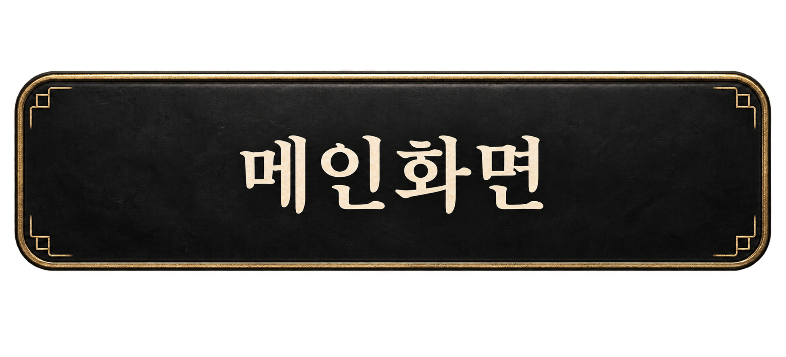

클리어하면 다음 단계가 해금됩니다 · Esc / 두 손가락 터치로 돌아오기
떨어지는 달을, 한 번의 펀치로.
초승달의 끝을 빛나는 표적에 꽂으세요.
사용자 제공 원본 캐릭터 · 브로치 사용
① 각도·힘·회전을 조절하세요.② 떨어지는 브로치를 클릭/탭하면 오른쪽으로 펀치합니다. Space도 가능합니다.③ 금빛 테두리 표적에 두 날카로운 끝 중 하나를 꽂으면 성공합니다.
목재·대나무: 낮은 속도에도 꽂힘벽돌: 더 빠른 충돌 필요분홍 젤리: 반발만 가능금속: 튕기는 장애물
끝이 먼저 닿고, 진행 방향과 끝 방향이 맞아야 꽂힙니다. 한 스테이지에 펀치 3회. 실패하면 즉시 재시도할 수 있습니다. 진행은 이 브라우저에 저장됩니다.